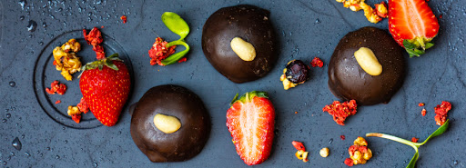

<!DOCTYPE html>
<html>
    <head>
     <meta charset="utf-8">
     <title> Jennifer's site</title>
     <meta name="description" content="Jennifer's personal site" />
     <link rel="stylesheet" href="css/styles.css" /> 
    </head>
</html>
<body>
    <div class="container">
        
        <h1 class="locations">Best Food Locations</h1>  
        <p class="caption">Never break a promise! On the other hand, you can break as many pie crust as you want. Here are some places with the best savory and sweet foods to brighten up your day!  </p>
    </div>
    <div class="list">
        <video class=" lazyload-in-view lazyloading" data-src="https://hmg-h-cdn.hearstapps.com/videos/1-kalaya-1-1605560045.mp4" autoplay="" loop="" muted="" playsinline="" src="https://hmg-h-cdn.hearstapps.com/videos/1-kalaya-1-1605560045.mp4" width="900px"></video>
        <p class="body-text">Kalaya is the restaurant that every food writer—hell, every food lover—dreams of walking into someday. It’s a place that absolutely purrs with spirit. Presided over by grande dame Chutatip “Nok” Suntaranon, whose knife work in the kitchen is matched only by the cutting speed of her quips in the dining room, Kalaya delivers Thai dishes with such depth of soul and flavor that you’re left dreaming about them for days: tapioca dumplings, blue-hued from butterfly-pea flowers; khao yum kamin (rice salad) crowned with a bronze-dark gush of caramelized palm sugar; roaring, glorious curries of beef and lamb and crabmeat that make you forget all the other curries you’ve ever met. Even in a city with arguably the most exciting food scene in the United States, Kalaya leaves the competition in the dust. Drive a thousand miles if you have to. Just go. <em><a class="body-link" href="https://www.kalaya.net/menus" target="_blank" data-vars-ga-outbound-link="https://www.kalaya.net/menus">Kalaya at 764 South Ninth Street</a> </em>—J.G.<em> </em></p>
        <video class="leah" data-src="https://hmg-h-cdn.hearstapps.com/videos/2-leah-louise-1-1605560272.mp4" autoplay="" loop="" muted="" playsinline="" src="https://hmg-h-cdn.hearstapps.com/videos/2-leah-louise-1-1605560272.mp4"width="900px"></video>  
        <p class="body-text">The top story in American cooking over the past decade has been the rise of Black chefs such as Mashama Bailey, Edouardo Jordan, and Kwame Onwuachi—and a long-overdue celebration of the foodways of the African diaspora. At Leah &amp; Louise, the Memphis-born chef Gregory Collier—who owns the Camp North End juke joint with his wife, Subrina—moves that conversation into its next phase, with a vision of Black southern cuisine that’s as innovative as it is fun. He takes inspiration from the soil (his okra dish, called Mama Earth, looks and tastes like a supernova of texture and flavor) and from the dollar store (the cream inside his oatmeal-cookie sandwich is suffused with Tang). And don’t ignore Collier’s cabbage: Slow-roasted and sauteed with smoked sausage and flooded with rich pork-neck bisque, it is like a cruciferous amplification of biscuits and gravy. <a class="body-link" href="https://www.leahandlouise.com/" target="_blank" data-vars-ga-outbound-link="https://www.leahandlouise.com/"><em>Leah &amp; Louise at 301 Camp Road</em></a> —J.G.</p>
        <video class=" lazyload-in-view lazyloading" data-src="https://hmg-h-cdn.hearstapps.com/videos/3-mokyo-1-1605561013.mp4" autoplay="" loop="" muted="" playsinline="" src="https://hmg-h-cdn.hearstapps.com/videos/3-mokyo-1-1605561013.mp4"width="900px"></video>
        <p class="body-text">I’m not sure what a jewel like Mokyo is doing in the middle of the thumping, tattoo-parlored bacchanal that is St. Marks Place, especially with a culinary premise that is already difficult to explain to someone who just wants to get hammered. (Chef Kay Hyun delivers tapas that merge the vantage point of her native Korea with the flavors of Peru, the Middle East, and the Iberian Peninsula, for starters.) No risk, no reward: On a Saturday night at Mokyo, I had dishes like pork jowl with a kalamata aioli and corn dumplings in a truffle salsa verde that were head-spinningly delicious in ways that I have never experienced before. Clearly the revelers roaming around the East Village were missing the real party. <em><a class="body-link" href="https://www.mokyony.com/" target="_blank" data-vars-ga-outbound-link="https://www.mokyony.com/">Mokyo at 109 Saint Marks Place</a></em> —J.G.</p>
        <video class=" lazyload-in-view lazyloading" data-src="https://hmg-h-cdn.hearstapps.com/videos/4-nihao-1-1-1605563651.mp4" autoplay="" loop="" muted="" playsinline="" src="https://hmg-h-cdn.hearstapps.com/videos/4-nihao-1-1-1605563651.mp4"width="900px"></video>
        <p class="body-text">NiHao is the brainchild of a power quartet: Peter Chang, the elusive mid-Atlantic legend of Szechuan cuisine; his wife, Lisa; their daughter, Lydia; and the pastry wizard Pichet Ong. The result is a categorization-defying Chinese restaurant that pays loving, absurdly delicious tribute to the ways that Chinese cooking is interpreted around the world. That may sound like a lot to undertake—hopscotching gleefully, as it does, from crab rangoon to Peking duck to cold tofu with century egg to (hey, why not?) a Basque-style cheesecake. But remember, this is a family band, not a solo act. And rules are for amateurs. <em><a class="body-link" href="https://www.nihaobaltimore.com/" target="_blank" data-vars-ga-outbound-link="https://www.nihaobaltimore.com/">NiHao at 2322 Boston Street</a></em> —J.G.</p>
        <video class=" lazyload-in-view lazyloading" data-src="https://hmg-h-cdn.hearstapps.com/videos/5-bell-s-1-1-1605563676.mp4" autoplay="" loop="" muted="" playsinline="" src="https://hmg-h-cdn.hearstapps.com/videos/5-bell-s-1-1-1605563676.mp4"width="900px"></video>
        <p class="body-text">While this tiny town has been a SoCal wine-country escape for a while, the two new epicenters of the area’s coolness are now the midcentury-chic Skyview Motel and a bistro on the town’s main drag, Bell’s. New French in the Old West? Somehow it works. Chef Daisy Ryan and her husband, Gregory, have created a place that feels so welcoming and familiar, yet every bite brings excitement, as if you were trying steak au poivre, or uni and caviar, or even salad and fries and ice cream, for the first time. (Don’t skip the BLT at lunch.) Ryan’s food finds that farm-fresh, leisurely thread between California and France that makes you want to order another bottle of wine and consider slowing life down a bit. <em><a class="body-link" href="https://www.bellsrestaurant.com/" target="_blank" data-vars-ga-outbound-link="https://www.bellsrestaurant.com/">Bell's at 406 Bell Street</a></em> —Kevin Sintumuang</p>
        <video class=" lazyload-in-view lazyloading" data-src="https://hmg-h-cdn.hearstapps.com/videos/6-indo-1-1-1605563697.mp4" autoplay="" loop="" muted="" playsinline="" src="https://hmg-h-cdn.hearstapps.com/videos/6-indo-1-1-1605563697.mp4"width="900px"></video>
        <p class="body-text">You wonder, as you sit at the counter at Indo and watch chef Nick Bognar at work: Can this guy do anything? Indo is not a sushi restaurant per se, yet electrifying bites of nigiri land in front of you during the course of a meal like random emoji lightning bolts of flavor. (Looking back now, I can’t help but think of Eddie Van Halen onstage unleashing a Mozartian flourish of arpeggios just for the virtuosic fuck of it.) Meanwhile, much of the menu at Indo is rooted in the complexities of Thai cuisine that the chef grew up with. Bognar, goateed and headbanded, toggles between cutting boards and cultures with the sprezzatura of a shredder. <em><a class="body-link" href="https://www.indo-stl.com/" target="_blank" data-vars-ga-outbound-link="https://www.indo-stl.com/">Indo at 1641D Tower Grove Avenue</a></em> —J.G.</p>
        <video class=" lazyload-in-view lazyloading" data-src="https://hmg-h-cdn.hearstapps.com/videos/7-zhug-1-1605563716.mp4" autoplay="" loop="" muted="" playsinline="" src="https://hmg-h-cdn.hearstapps.com/videos/7-zhug-1-1605563716.mp4"width="900px"></video>
        <p class="body-text">You’re going to have a problem if you go to Zhug, because you’re going to want to eat everything. The menu seems to have been written by a hypnotist. Hummus with curried lamb and apricots? Yes. Hummus with nigella seeds and burnt onions? Okay, that too. Smoked pastrami short rib? Yeah, throw that in as well. Skip lunch that day, gather friends, and clear space on the tabletop, because chef Douglas Katz’s vision of the food of the Middle East is the stuff that delirious feasts are made of. <em><a class="body-link" href="https://zhugcle.com/" target="_blank" data-vars-ga-outbound-link="https://zhugcle.com/">Zhug at 12413 Cedar Road</a></em> —J.G.</p>
        <video class=" lazyload-in-view lazyloading" data-src="https://hmg-h-cdn.hearstapps.com/videos/8-pasjoli-1605563736.mp4" autoplay="" loop="" muted="" playsinline="" src="https://hmg-h-cdn.hearstapps.com/videos/8-pasjoli-1605563736.mp4"width="900px"></video>
        <p class="body-text">I dream of Pasjoli’s pressed duck. It’s why I return. An ornate cart arrives at the table with a roasted duck. Its breast is carved and whisked back to the open kitchen for an additional sear. Meanwhile, the rest of the canard is placed into a gleaming press, hand-turned by a cook, juices pouring into a delicate teacup. That is then transformed into a sauce, mounted with cognac, and poured atop the sliced breast, just as it returns. The dish is a decadent throwback, but like everything else at chef Dave Beran’s ode to Old World French cooking, it is surprisingly light and joyful and makes you feel special, sans snootiness. <em><a class="body-link" href="https://www.pasjoli.com/" target="_blank" data-vars-ga-outbound-link="https://www.pasjoli.com/">Pasjoli at 2732 Main Street</a></em> —K.S.</p>
        <video class=" lazyload-in-view lazyloading" data-src="https://hmg-h-cdn.hearstapps.com/videos/9-datoscano-1-1-1605563754.mp4" autoplay="" loop="" muted="" playsinline="" src="https://hmg-h-cdn.hearstapps.com/videos/9-datoscano-1-1-1605563754.mp4"width="900px"></video>
        <p class="body-text">When I look back at the anxieties and sorrows of this pandemic year, I will always be grateful for the sweet relief of a dinner with my daughter at da Toscano, where we sat under an umbrella on the sidewalk and listened to a young jazz trio. Every pour of wine from beverage director Madeline Maldonado and every dish that emerged from chef Michael Toscano’s kitchen felt like a gift. Deviled eggs with an undercurrent of vitello tonnato, a plate of super-fresh cantaloupe with feathery slivers of prosciutto, a tender tangle of cacio e pepe. You don’t go to da Toscano just to eat; you go to be healed. <em><a class="body-link" href="https://www.datoscano.com/" target="_blank" data-vars-ga-outbound-link="https://www.datoscano.com/">da Toscano at 24 Minetta Lane</a></em> —J.G.</p>
        <video class=" lazyload-in-view lazyloading" data-src="https://hmg-h-cdn.hearstapps.com/videos/10-fox-1-1605563782.mp4" autoplay="" loop="" muted="" playsinline="" src="https://hmg-h-cdn.hearstapps.com/videos/10-fox-1-1605563782.mp4"width="900px"></video>
        <p class="body-text">Meat and potatoes. The words are often used as a pejorative to describe the food of the Midwest. But with the finesse and creativity that chef Vaughn Good employs, give me meat and potatoes all day. The menu at Fox and Pearl changes frequently. As a general rule: Be brave. Should these dishes make an appearance, order them: rabbit potpie, the beef-heart tartare, the pork terrine with fried duck liver, and, of course, the now-famous foie gras sausage—emulsified pork and bits of foie poached in duck fat. Fox and Pearl melds live-fire cooking, nose-to-tail butchery, house-made charcuterie, superb hand-cut pastas, and natural wines (chosen by wine director Ben Nuñez) in a handsome space (designed by co-owner Kristine Hull) that will make you rethink what midwestern cuisine can be. <em><a class="body-link" href="https://www.foxandpearlkc.com/home" target="_blank" data-vars-ga-outbound-link="https://www.foxandpearlkc.com/home">Fox and Pearl at 2143 Summit Street</a></em> —K.S.</p>
        <video class=" lazyload-in-view lazyloading" data-src="https://hmg-h-cdn.hearstapps.com/videos/11-piccolina-1-1605563838.mp4" autoplay="" loop="" muted="" playsinline="" src="https://hmg-h-cdn.hearstapps.com/videos/11-piccolina-1-1605563838.mp4"width="900px"></video>
        <p class="body-text">Piccolina, the little sister to chef Amy Brandwein’s Centrolina, hums with a laid-back spirit of spontaneity, specializing in the à la minute char of a wood-fired oven. I’ll probably drive back down to our nation’s capital on a whim for the mushroom pizza and the porchetta panuzzo (a melty pork sandwich that gets you fantasizing that this alley you’re in is actually in Naples), but it’s Brandwein’s vegetables that haunt me: mushrooms that float to the table with an audible sizzle and a perfume of garlic, and a bowl of smoky black chickpeas that taste the way standing next to a campfire feels. <em><a class="body-link" href="https://www.piccolinadc.com/" target="_blank" data-vars-ga-outbound-link="https://www.piccolinadc.com/">Piccolina at 963 Palmer Alley NW</a></em> —J.G.</p>
        <video class=" lazyload-in-view lazyloading" data-src="https://hmg-h-cdn.hearstapps.com/videos/12-albi-1-1605563865.mp4" autoplay="" loop="" muted="" playsinline="" src="https://hmg-h-cdn.hearstapps.com/videos/12-albi-1-1605563865.mp4"width="900px"></video>
        <p class="body-text">Albi and its adjoining all-day café, Yellow, use chef Michael Rafidi’s Palestinian roots as a starting point, but tedious adherence to tradition is not his thing. He folds Maryland crab into his labne as a nod to the mid-Atlantic region (creating one hell of a chip dip in the process); there are foraged chanterelles in his hummus; there are pears and huckleberries in his fattoush. Meanwhile, Brent Kroll’s confident, majestic wine list has categories like “Unicorn Wines,” “The Outsiders,” and “Donnie Darko Reds.” Order everything on the menu for dinner and then come back to Yellow for a breakfast pita with kefta the next morning. <em><a class="body-link" href="https://www.albidc.com/" target="_blank" data-vars-ga-outbound-link="https://www.albidc.com/">Albi at 1346 Fourth Street SE</a></em> —J.G.</p>
        <video class=" lazyload-in-view lazyloading" data-src="https://hmg-h-cdn.hearstapps.com/videos/13-croc-1-1605563895.mp4" autoplay="" loop="" muted="" playsinline="" src="https://hmg-h-cdn.hearstapps.com/videos/13-croc-1-1605563895.mp4" width="900px"></video>
        <p class="body-text">The airy industrial space, high ceilings, exposed brick, steel, well-worn wood, and golden light, set in the Wythe Hotel, a kind of HQ for grown-up Williamsburg hipness, meant that Le Crocodile was destined to be a beautiful scene with beautiful people no matter what. But the food from chefs Aidan O’Neal and Jake Leiber is the primary draw. The duo, dipping into a grab bag of influences, reboot old Gallic warhorses with West Coast sunshine and Quebecois funk. There’s a playfulness to the menu: Skate frites make an appearance in lieu of steak frites, pickled mussels instead of herring. It’s an entirely new perspective on the brasserie. <em><a class="body-link" href="https://lecrocodile.com/" target="_blank" data-vars-ga-outbound-link="https://lecrocodile.com/">Le Crocodile at 80 Wythe Avenue</a></em> —K.S.</p>
        <video class=" lazyload-in-view lazyloading" data-src="https://hmg-h-cdn.hearstapps.com/videos/14-prubechu-1-1-1605563967.mp4" autoplay="" loop="" muted="" playsinline="" src="https://hmg-h-cdn.hearstapps.com/videos/14-prubechu-1-1-1605563967.mp4" width="900px"></video>
        <p class="body-text">You might be unfamiliar with the cuisine of Guam, but Prubechu will turn you into a fan. Chef Shawn Naputi and general manager Shawn Camacho present the food of their native island with love and care—the food ultimately tells the story of the colonization of the Chamorro people by the Spanish, Japanese, and Americans over centuries. The atmosphere, especially at the picnic tables in the parking lot, is festive and familial, however: a big, hearty invitation to enjoy sweet rolls with a butter made from tuba (coconut sap), dry-fried chicken wings served with a tangy fina’denne’ sauce, and tinaktak, tender coconut-braised beef and green beans served atop handmade egg noodles. The flavors are bold, comforting. You will want to become a regular, and many have. <em><a class="body-link" href="https://www.prubechu.com/" target="_blank" data-vars-ga-outbound-link="https://www.prubechu.com/">Prubechu at 2224 Mission Street #A</a></em> —K.S.</p>
        <video class=" lazyload-in-view lazyloading" data-src="https://hmg-h-cdn.hearstapps.com/videos/15-goosefeather-2-1605565173.mp4" autoplay="" loop="" muted="" playsinline="" src="https://hmg-h-cdn.hearstapps.com/videos/15-goosefeather-2-1605565173.mp4" width="900px"></video>
        <p class="body-text">Does chef Dale Talde’s shift from Brooklyn to Westchester County represent a kind of suburban cash-in? Curtail your skepticism. Goosefeather occupies several rooms of the white-columned King Mansion, high on a hill above the Hudson River, and during the warmer months of the pandemic it spilled out onto a vast grassy expanse like a socially distanced lawn party. Talde’s menu takes its core inspiration from the cuisine of Hong Kong, but he shakes up the canon with all kinds of farm-to-tabley and pub-grubish twists: ribs of sweet summer corn dusted with Chinese five-spice powder, kung pao chicken wings that you dunk in a tub of buttermilk ranch, crab rice that’s got more layers than a Christopher Nolan movie. <em><a class="body-link" href="https://www.goosefeatherny.com/" target="_blank" data-vars-ga-outbound-link="https://www.goosefeatherny.com/">Goosefeather at 49 East Sunnyside Lane</a></em> —J.G.</p>
        <video class=" lazyload-in-view lazyloading" data-src="https://hmg-h-cdn.hearstapps.com/videos/16-balkan-2-1605564482.mp4" autoplay="" loop="" muted="" playsinline="" src="https://hmg-h-cdn.hearstapps.com/videos/16-balkan-2-1605564482.mp4" width="900px"></video>
        <p class="body-text">We’ll admit that we didn’t have “Bosnian flatbreads” on our 2020 bingo card, either, but chef Loryn Nalic (whose husband, Edo, grew up in Bosnia) is doing some astonishing things with dough in the Show-Me State—things that (oh, the blasphemy) made us forget about pizza for a moment. I mean, the piping-hot boat of bread that is pide, with its duet of ajvar (a red-pepper spread) and kajmak (a creamy fresh cheese)! At first we didn’t understand why there was a line down the block at 11:00 in the morning. Then we took a bite. Let’s just say you’d better watch your back, pizza. <em><a class="body-link" href="http://www.balkantreatbox.com/" target="_blank" data-vars-ga-outbound-link="http://www.balkantreatbox.com/">Balkan Treat Box at 8103 Big Bend Boulevard</a></em> —J.G.</p>
        <video class=" lazyload-in-view lazyloading" data-src="https://hmg-h-cdn.hearstapps.com/videos/17-found-1605564099.mp4" autoplay="" loop="" muted="" playsinline="" src="https://hmg-h-cdn.hearstapps.com/videos/17-found-1605564099.mp4" width="900px"></video>
        <p class="body-text">An East Coast seafood shack in East Hollywood? Count us in. But Found Oyster is more than that. Chef Ari Kolender shucks pristine bivalves, yes, but pay attention to the plates pouring out of his tiny kitchen. Chicken-fried oysters crunch like Popeyes, yielding to briny goodness. Kolender performs a meant-to-be marriage by dressing up a lobster roll with bisque. His scallop tostada is a modern classic adorned with yuzu kosho and opal basil. You’ll want to pair everything with Coors, at first. You’ll switch to champagne before the night is over. <em><a class="body-link" href="https://www.foundoyster.com/" target="_blank" data-vars-ga-outbound-link="https://www.foundoyster.com/">Found Oyster at 4880 Fountain Avenue</a></em> —K.S.</p>
        <video class=" lazyload-in-view lazyloading" data-src="https://hmg-h-cdn.hearstapps.com/videos/18-palmcity-1-1605564120.mp4" autoplay="" loop="" muted="" playsinline="" src="https://hmg-h-cdn.hearstapps.com/videos/18-palmcity-1-1605564120.mp4" width="900px"></video>
        <p class="body-text">An ideal S. F. afternoon: Order hoagies and a bottle (or two) of fun, esoteric wine from Palm City, then walk to Ocean Beach. Sit among the dunes, pop open that pét nat, and savor some of the most nuanced classic sandwiches in the country. The Italian-American has a zing from arugula and a ’nduja aioli; the au poivre makes other roast-beef sandwiches seem bland. Owners Monica Wong and Dennis Cantwell and chef Melissa McGrath planned to open a small-plate restaurant. The hoagies were a pandemic pivot. Will they remain on the menu? Perhaps. As the ocean winds remind us, all is temporary. Order another on the way back. <em><a class="body-link" href="https://www.palmcitysf.com/" target="_blank" data-vars-ga-outbound-link="https://www.palmcitysf.com/">Palm City at 4055 Irving Street</a></em> —K.S.</p>
        <video class=" lazyload-in-view lazyloading" data-src="https://hmg-h-cdn.hearstapps.com/videos/19-porto-1-1-1605564144.mp4" autoplay="" loop="" muted="" playsinline="" src="https://hmg-h-cdn.hearstapps.com/videos/19-porto-1-1-1605564144.mp4" width="900px"></video>
        <p class="body-text">The distinct smell of firewood hits you when you walk into the luscious, maximalist space that is Porto. Everything that requires heat is cooked with fire. The place is an homage to the seafood of Portugal and Galicia, Spain. You’ll find some familiar items on the menu—like conservas served on toast—but it’s the cheeky, more cerebral dishes where chef Marcos Campos excels. The “pasta do mar” uses actual seaweed from Galicia as noodles, the cardinal-red carabineros shrimp are delicately cured and served with plankton olive oil, and there is even a nori ice cream complete with candied sea lettuce. It’s a sideways approach to the coastal region, but that’s the fun of it. <em><a class="body-link" href="https://www.portochicago.com/" target="_blank" data-vars-ga-outbound-link="https://www.portochicago.com/">Porto at 1600 West Chicago Avenue</a></em> —K.S.</p>
        <video class=" lazyload-in-view lazyloading" data-src="https://hmg-h-cdn.hearstapps.com/videos/20-fieldtrip-1-1605564180.mp4" autoplay="" loop="" muted="" playsinline="" src="https://hmg-h-cdn.hearstapps.com/videos/20-fieldtrip-1-1605564180.mp4" width="900px"></video>
        <p class="body-text">I love the central thesis behind chef JJ Johnson’s Fieldtrip—let rice unite us!—and I love the rice bowls themselves, with their crave-inducing combinations of sauces and toppings. (By the way, don’t sleep on the seafood gumbo, the most delicious interpretation that I have encountered outside Louisiana.) I also love the way Fieldtrip has evolved, thanks to <a class="body-link" href="https://www.esquire.com/food-drink/restaurants/a32755349/chef-jj-johnson-support-black-owned-businesses-restaurants/" target="_blank" data-vars-ga-outbound-link="https://www.esquire.com/food-drink/restaurants/a32755349/chef-jj-johnson-support-black-owned-businesses-restaurants/">Johnson’s heart and drive</a>, into a hub of influence and enterprise on Harlem’s Malcolm X Boulevard: Just look at how thousands of those bowls were delivered to hospitals this year as Fieldtrip fed medical workers trying to save people’s lives. Let rice unite us, indeed. <em><a class="body-link" href="https://www.fieldtripnyc.com/" target="_blank" data-vars-ga-outbound-link="https://www.fieldtripnyc.com/">Fieldtrip at 109 Malcolm X Boulevard</a></em> —J.G.</p>
        <video class=" lazyload-in-view lazyloading" data-src="https://hmg-h-cdn.hearstapps.com/videos/21-nami-1-1-1605564200.mp4" autoplay="" loop="" muted="" playsinline="" src="https://hmg-h-cdn.hearstapps.com/videos/21-nami-1-1-1605564200.mp4" width="900px"></video>
        <p class="body-text">Have you been longing for really good sushi during the months stuck at home? Join the club. But with money tight and elbow-to-elbow dining feeling dicey, omakase-counter splurges might be a distant memory for a while. Here’s Nami Nori to save the day and feed your need: The trio of Jihan Lee, Lisa Limb, and Taka Sakaeda, all graduates of the sushi temple known as Masa, have created a no-frills hangout where a row of five handrolls will set you back only $28. Fast casual has never felt so luxurious. <em><a class="body-link" href="https://naminori.nyc/" target="_blank" data-vars-ga-outbound-link="https://naminori.nyc/">Nami Nori at 33 Carmine Street</a></em> —J.G.</p>
        <video class=" lazyload-in-view lazyloading" data-src="https://hmg-h-cdn.hearstapps.com/videos/22-adara-1605568009.mp4" autoplay="" loop="" muted="" playsinline="" src="https://hmg-h-cdn.hearstapps.com/videos/22-adara-1605568009.mp4" width="900px"></video>
        <p class="body-text">Here I ate inside, and I’m glad I did. The bar gave off a crimson glow, and I listened to <a class="body-link" href="https://www.amazon.com/Sunset-Mission-BOHREN-CLUB-GORE/dp/B01M4FF7KD?ots=1&amp;tag=esquire_auto-append-20&amp;ascsubtag=[artid|10054.a.34648683[src|[ch|[lt|" target="_blank" data-vars-ga-outbound-link="https://www.amazon.com/Sunset-Mission-BOHREN-CLUB-GORE/dp/B01M4FF7KD" data-affiliate="true" rel="noskim">German jazz</a> that could’ve been the soundtrack of a David Lynch movie. Nominally, Adarra is a Basque restaurant, with shimmering interpretations of mussels escabeche and gambas al ajillo from chef Randall Doetzer and a let’s-go-for-a-ride wine list from him and his wife, Lyne. But really it’s an alternate universe, a crepuscular alcove for anyone who wants to nibble jamón ibérico and experiment with Louis-Antoine Luyt’s indie whites from Chile all night long. <em><a class="body-link" href="https://restaurantadarra.com/" target="_blank" data-vars-ga-outbound-link="https://restaurantadarra.com/">Adarra at 618 North First Street</a> </em>—J.G.</p>
